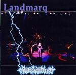

| Artist: | Landmarq |
| Title: | Aftershock |
| Label: | Cyclops CYCL 124 |
| Length(s): | 46 minutes |
| Year(s) of release: | 2002 |
| Month of review: | [06/2003] |
| 1) | The Vision Pit | 10.23 |
| 2) | Heritage | 5.56 |
| 3) | After I Died Somewhere | 4.42 |
| 4) | Medley: Ta Jiang/Narovlya | 8.12 |
| 5) | Lighthouse | 11.03 |
| 6) | Embrace | 6.30 |
The Vision Pit is the first of the six songs. A plodding opening with the guitar singing the back of the vocal part and the drums lying rather heavy and flat upon the song. The song harbours the sort of drama that one expects maybe sooner in a Nolan song. This is not to say that I do not like this song, however. Like Wilson, Hitchings sings the song with plenty of fire and the song fits her voice like a glove. Too bad about the drum sound which I do not particularly like. Halfway, we get some rest in a moody and dark interlude. Then the ethereal guitar and fast rhythms set back in and we move into more Arabic atmospheres with some strong string work by R'Rose. Then we get back to pacey off-beat vocal part and Leigh's dancing keyboards.
Heritage is one of the two Hitching era tracks on this album. The song gets underway slowly. After a minute or so the poppy vocal parts open. Accessible and memorable, this comes close to pop music, light and merry as it is. The chorus is a good one, an instantly recognizable melody line. None of that let's do things the complicated way drivel. The guitar solo follows up on the chorus.
After I Died Somewhere is one of the better ballads around. Of course, with its reference to AIDS, it can not be a very happy one. It opens with piano, the vocals of Hitchings being quite different from Wilsons, she sings it in a more fragile fashion, without the breaking voice of Wilson. She also manages to bend some of the melodies in the chorus, and gets away with it. The majestic guitar solo ends all.
Two Steve Leigh tracks get combined into a medley: Ta Jiang/Narovlya. Only instrumental elements on his medody. The pacey Ta Jiang opens, especially during the second minute, plenty of speed in there. The lightness and melodicity characteristic for the band stays. The fast staccato guitar passage is also present, bringing together all the most noteworthy melodic elements together. Round the five minute mark Narovlya enters the picture.
Lighthouse is one of the best Landmarq track around in my opinion. It has a typically English mysterious feel, with plenty of Steve Leigh's keyboards dancing throughout for the lighter aspects. The drums reflect the pounding of the waves, and Tracy sings like a siren.
Embrace is the final track, the Landmarq love ballad. She does not have the tear in her voice Damian does, but Tracy does quite well, changing the song to suite her needs. The song is topped off by an excellent guitar solo.